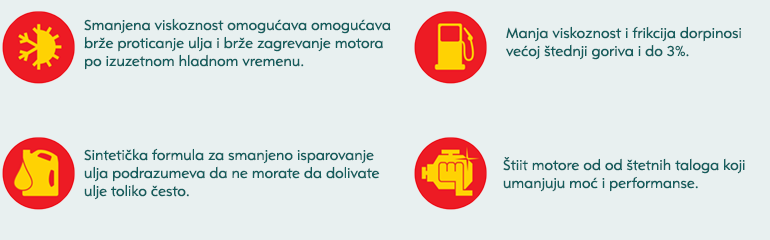

Kompanije Shell ima iza sebe 70 godina u inovacijama i stoga je broj jedan dobavljač lubrikanata. Poznata činjenica je da neki od
svetskih proizvođaća automobila preferiraju
Shell motorno ulje za prvo punjenje novih vozila koja izlaze iz fabike. Kompletan asortiman uključujući sintetičke proizvode visokih performansi
može da zadovolji sve poterbe i aplikacije koje vam trebaju.
AUTOMATERIJAL d.o.o je ovlašceni distributer Shell ulja.
PurePlus tehnologija
Shell Helix Ultra motorna ulja su formulisana koristeći jedninstvenu Shell PurePlus tehnologiju koja pruža značajan broj tehničkih pogodnosti za korisnike. U poređenju sa postojećim
grupama baznih ulja pruža poboljšanu viskoznost, smanjeno trenje i bolje performanse. Postizanjem čistoće motora koja nije bila moguća sa postojećim grupama baznog ulja, Shell Helix ultra
postaje najnaprednije motorno ulje.
Shell PurePlus tehnologija predstavlja revoluciju koja je omogućila da se prirodni gas pretvori u veoma kvalitetno i jedinstveno sintetičko bazno ulje.
Shell je PurePlus tehnologiju već počeo da koristi kod svojih proizvoda, a gotovo stoprocentna čistoća motornog ulja sa ovom oznakom garantuje potpunu zaštitu motora, koja su kod modernih automobila
vrlo kompleksna i zahtevaju sintetičko ulje visokog kvaliteta da bi sve komponente radile onako kako je to predviđeno.

Shell LubeMatch
Preko Shell LubeMatch stranice mozete izabati odgovarajuće ulje za sve vaše potrebe. Osim pravilnog odabira ulja na stranici doboćete infomraciju o količinama, intervalima
zamene ulja, te svim informacijama koji su neophodni za pravilno podmazivanje.